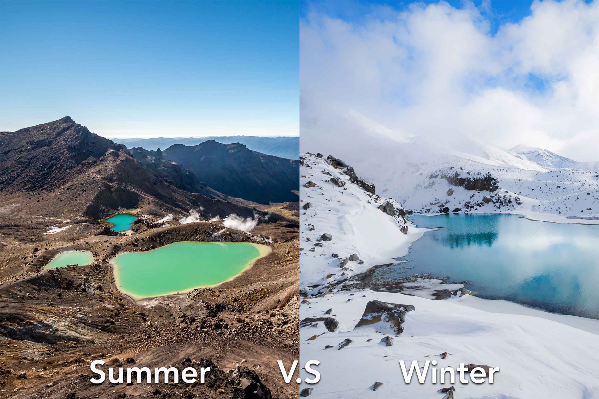
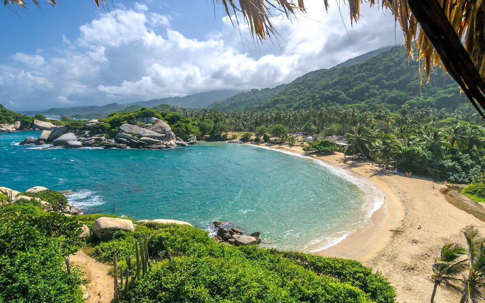
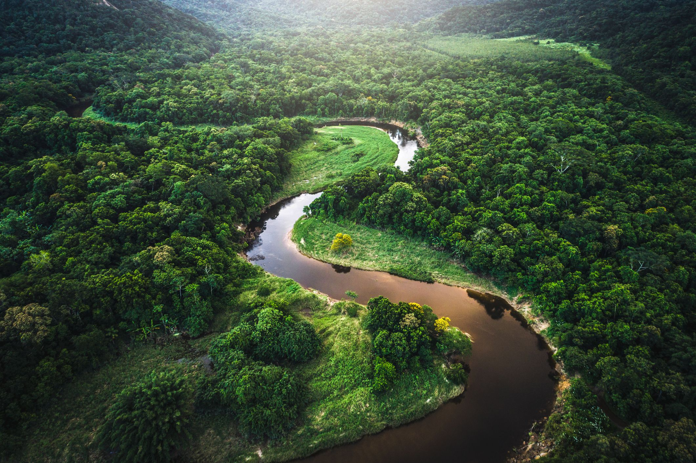

If you love travelling, you are in the right place, reading the perfect article for you. Whether you are looking for a place to spend your holiday or a weekend getaway, this is the top 10 Countries you have to visit!
There are a lot of things you can do and see in Spain, as it is such a beautiful country. Here are a few of those things!
This is one of the most well-known attractions in Spain, and one of the most beautiful as well. Even though its construction began in the 1800s, the impressive church is still unfinished, but that does not make it less of an architectural masterpiece.
The Prado is one of the world’s biggest art museums, with one of the richest collections. It's no wonder this is known as El Paseo del Arte, the Boulevard of the Arts.
Seville Cathedral is a Roman Catholic Cathedral, and in the 16th century, when it has been built, it was the largest cathedral in the world (11,520 square meters). Even now, it is one of the most beautiful buildings in the world.
Plaza Mayor is another place that you must visit. It dates back to the 15th century, when it was used as a market. Today it is there to impress un with its amazing architecture and history.
Toledo is known as the “Imperial City” and it sure looks like it. The mystical fortress looks like one of the Disney castles brought to life. It is a city with a rich history and culture as it dates back to 500 AD.
If you are a nature lover, this is the country for you. In New Zealand you can find anything from untamed wilderness to rich culture. This is a country of adventure and if this is your scene then the list of activities below will convince you to book a flight right now!
Spend an unforgettable night in one of the many mountain huts. There are more than 1000 such isolated places in New Zealand and it is an experience you must try at least once in your life. The views are breath taking, and the solitude is the reprieve we all need from time to time.
If you have ever dreamed of such a thing, New Zealand is the place to try it out. On the South Island you can find a smaller species of dolphins, the Dusky Dolphins. Being that small (maximum 2 meters) and very peaceful, they make the perfect scuba diving partner.
We have all heard of this extreme activity before, some of us may have even tried it out, but the views in New Zealand make it the perfect place for such an experience.
Milford Sound is the most visited touristic attraction in New Zealand, and it is often referred to as the 8th Wonder of the World. You can get there either by Kayak or a Boat Cruise. Both experiences are unforgettable and a must for all the people who enjoy travelling.
Tangariro Crossing is one of the best hikes in New Zealand. The views on this trek are truly epic!

Turkey has an incredibly rich culture and is home to numerous locations that are beyond your dreams. It is full of ancient sites, unparalleled destinations, and unique beauty.
Aya Sophia has been renowned as one of the most beautiful buildings in the world. The monument is certainly a must do for every person visiting this country.
The mighty ruin of Ephesus is not to be missed. This is one of the only still-standing Roman cities. You can spend almost a day exploring the sites and seeing how the romans lived.
Pamukkale, or Cotton Castle in English, is one of the most well-known natural wanders of Turkey. For the best photographs you should come at dusk and be amazed by how the travertines glow as the sun sinks.
The jaw-dropping monument used to be a Roman theatre. It dates back from the classical age and is considered to be the finest surviving example.
Once home to the most ancient library in the world, now Pergamum in a must-see attraction if you decide to visit Turkey.
Romania is not such a well-known country, but it is definitely the place to visit if you are looking for more rustic experiences.
Because of the Dracula stories that have travelled all over the world, the exquisite fortress is one of the most popular attractions in Romania.
Built in the 19th century as a summer residence for the royal family, Peles Castle is one of the most beautiful castles you will ever see.

Bucovina’s Monasteries are Romania’s most important religious attraction. Their unique and vivid paintings living permanently in a person’s memory.
The Palace of Parliament in Bucharest is Europe’s biggest building and a sight you cannot miss. Also, it is the heaviest building, as well as the largest legislature building worldwide.
The mysterious rock formation, high in the Bucegi Mountains, is one of the most interesting natural things you will ever see. Legend claims that the rock represents a long-forgotten god.

Columbia is a beautiful country with a lot of attractions. I would definitely recommend this country for a nature and adventure lover.
If you decide to go trekking in the lost City of Teyuna, you have to prepare for the 46km trek that will take you through jungles, hills and rivers.
Does mud-bathing in a 2,300m deep volcano sounds appealing to you? Columbia is the only place where you can have such an extraordinary experience.
You can go hiking and swimming in Tatyrona National Park, a place full of nature and wanders. Just keep in mind that not all places are safe for swimming.

The Cocora Valley is the place that the towering 68m wax palms call home. You can go trekking through the cloud forest and enjoy the exquisite atmosphere.

You have the chance to visit the coffee factories and discover how exactly the coffee we love so much is made. Here you can even make your own coffee and bring it home as a holiday souvenir.
Malacca or Melaka is a historic state full of culture. Also known as the state with the most interesting architecture in Malaysia, Malacca is filled with museums, galleries, and places of historic interest.
Located in the state of Pahang, Taman Negara National Park is one of the best places to go if you enjoy trekking. It has everything from 100km road trips to gentle hikes for beginners.
Many people fail to visit this city because of its more conservative reputations, but here you can find a wide range of mosques and other religious sites, as well as the old royal palaces which are still the home of the current Sultan of Kelantan.

The centre helps orangutans that have been taken as pets or left to tend for themselves in the wilderness adapt to their life. Once they are ready, they are released. You can watch the extraordinary animals and even interact with them.
Very close to the cost of Thailand, the islands are known for their beaches and incredibly clear water. Scuba diving remains the favourite activity in these parts.
Rainbow mountains, rare wildlife and lost cities make Peru a place you cannot miss in your travels. Here are some of the things that await you there.
An unforgettable 4-day trek will take you to the secret city. You will not regret this, but you need to be aware that the numbers are limited. Even if you are too late to book a place, there are a lot of other options for you to try out.

You will need to spend a day or two here, as the city is home to 15 historic sites as well as San Blas neighbourhood, an artisan quarter filled with galleries and boutiques.
The islands are any nature lover’s dream. They are teeming with colonies of sea lions, penguins and seabirds including albatrosses, boobies, and pelicans.
The lake, known as the birthplace of the sun, is the highest navigable lake in the world. Here you can see the man-made islands and the floating homes of the Uros Indians.
Peru is where the Amazon starts and you can enjoy the wildlife of it. Manu National Park, one of the parks here, is one of the most bio-diverse areas in the whole world, boasting at least 1,000 birds and over 200 mammal species. You cannot miss it!

Even though Czech Republic is one of the smallest nations, it will not disappoint travellers looking to visit central Europe. Considering its size, it is an easy country to get around and it has some breath-taking attractions.
Prague is one of the most well-known places to visit in Czech Republic, and for a reason. The Prague Castle is just one of the many examples of what the city has to offer.
The 520-meter span structure over the Vltava River was built in 1357 and has numerous attractions besides its unique architecture, including a considerable number of statues.
The Cathedral has a long history, as it dates back to 925. It is best known as the home of the Bohemian Coronation Jewels and it consists in a place you must see if you decide to visit the Czech Republic.

These spectacular libraries can be found in Prague, just next to the Charles Bridge. I will just let the pictures speak on their behalf, as no words could ever do them justice.
This area is known for its outstanding natural beauty and many massive rock formations that come out of the ground like spikes and pillars, formed during tens of thousands of years by erosion and by the elements.
England is a country with a rich history. It is filled with castles and all kinds of attractions you might want to see. This is certainly a place you want to visit at least once in your life.
At the east end of London, you can find Chinatown. The large inflow of emigrants from Hong Kong made it possible for you to enjoy some of the best Chinese restaurants right in London.
Founded in 1209, Cambridge University is one of the oldest universities in the world. These days, the university has 18,000 students, in 31 colleges.
Stretching from Ravenglass to Wallsend, Hadrian’s Wall was a fortification built by the Romans from 122 AD onwards. Today, visitors can still see a big part of the wall, as it was restructured in the 19th century.
A strong point of King Norman, the castle was built in the 11th century and served as a display of power and prestige. The castle in now occupied by the Durham University.

York Minster is on of the finest cathedrals in Great Britain and the largest one in Northern Europe. The cathedral was originally built in the 14th century.

Your traveller bucket list wouldn’t be complete without a visit in the beautiful country of Ireland!
The spectacular 111-mile-long tourist route is arguably Ireland’s most scenic route. It houses stunning islands to visit, many picturesque villages and wild sweeping mountains.

The Rock of Cashel is one of Ireland’s most visited heritage sites. The magnificent group of medieval buildings includes structures even from the 12th century.
The Dingle Peninsula combines wild beauty, history and a glimpse of Irish culture and language. The region is designated as a Gaeltacht, where the Irish language and culture are protected by government subsidies.
St. Stephan’s Green is a great place to enjoy a day in nature, have a picnic and delight in everything nature has to offer.
The Castle is the best-preserved medieval fortress in Ireland, dating back to 1425, while the Folk Park brings the life of 19th century ago Ireland to life.
This was our top 10 countries you must visit! 10 more countries will come soon for even more inspiration for your travels. If you want to see more pictures you can access our Pinterest account. Have a great day!